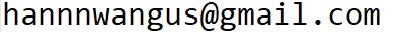

Address: Universität Hamburg, Theoretische Ozeanographie, Raum 450, Bundesstraße. 53, 20146 Hamburg
Email: 
Github: https://github.com/hannnwang
ORCID: https://orcid.org/0000-0002-5841-5474
Here is my current CV .
I grew up in Shanghai, China, a city near the Yangtze River. My name in Chinese is 王含.
I attended the University of Science and Technology of China in Hefei for my undergraduate studies, where I developed an interest in physics. I then moved to New York, USA, where I earned a Ph.D. from the Courant Institute of Mathematical Sciences under the supervision of Oliver Bühler. There, I was exposed to beauties in geophysical fluid dynamics. A fateful event was learning about the power laws in the Gage-Nastrom spectrum and their (dis)connections with classical two-dimensional theories. This developed my penchant to studying how to disentangle waves and balanced motions in the atmosphere and ocean, and over the years, I have been developing different tools for that.
My Ph.D. work developed analytical methods to help us gain dynamical insights from in-situ observational data. Then, at University of Toronto, where I spent 1.5 years working with Nicolas Grisouard, I explored deep learning algorithms to extract internal tides (an important component in oceanic waves) from two-dimensional spatial data. From April 2022 till September 2024, I did my second postdoc at the University of Edinburgh, supervised by Jacques Vanneste and Bill Young to study the interactions between deep-water surface gravity waves and currents in the ocean. Currently, I'm working at University of Hamburg as a Research Assistant and Project Leader in the "TRR 181" research center.
You may notice that my work locations over the recent years overlap greatly with Kostiantyn Tolmachov. During my spare time, I like learning more about nature. Here is my profile on my favorite social network.